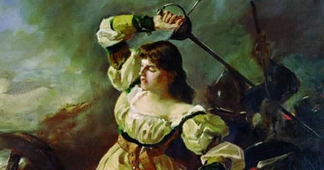
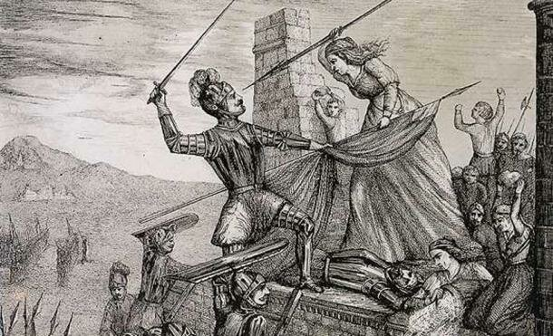
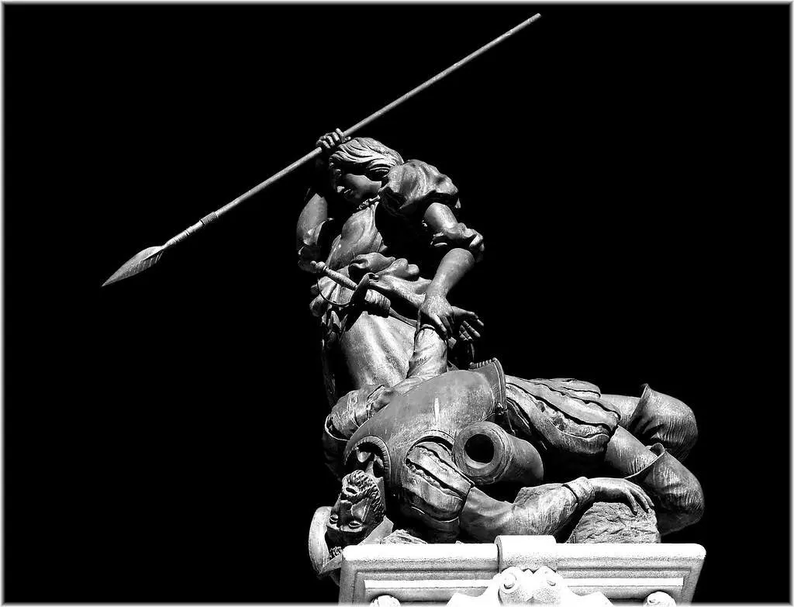

Iconas
María Pita



Ficha rápida da icona
- Nome: María Pita
- Nome completo: María Mayor Fernández de Cámara y Pita
- Nacemento: c. 1565, Sigrás (Cambre)
- Falecemento: 1643, Cambre
- Ocupación: Heroína galega
- Coñecida por: Defendeu a cidade da Coruña durante o ataque da Armada Inglesa (1589).
A icona en si
Quen non coñece a María Pita? Sempre souben quen era. Ao final, traballando nun arquivo é imposible non acabar cruzándote coa súa historia. Pero unha cousa é saber quen foi e outra moi distinta vivir na cidade onde a súa historia segue tan presente.
Levo xa uns anos vivindo na Coruña por traballo, aínda que eu son de Redondela. Desde que cheguei aquí intereseime moito máis pola figura de María Pita. Hai algo especial en vivir nun lugar que segue lembrando a alguén tantos séculos despois.
Hai uns días, mentres revisaba documentos relacionados co aire, apareceu unha fotografía da Ponte de Sigrás. Non sei explicar moi ben por que, pero quedei prendada dela. Parecíame un sitio coñecido, deses que sentes que xa viches antes aínda que non saibas cando.
Uns días despois, preparando esta entrada, volvín atoparme co nome de Sigrás. Foi entón cando entendín por que aquela ponte seguía dándome voltas na cabeza. Era o lugar onde nacera María Pita. De súpeto todo tivo sentido. Aquela fotografía xa non era só unha ponte; tamén era o principio doutra historia. Ás veces, traballando nun arquivo, as historias aparecen así: unha vai levando á outra ata que, de repente, todo empeza a encaixar.
María Mayor Fernández de Cámara y Pita naceu arredor de 1565 en Sigrás, no actual concello de Cambre. A súa historia quedou ligada para sempre á defensa da Coruña fronte ao ataque da Armada Inglesa en 1589.
Cando as tropas inglesas conseguiron abrir unha brecha na muralla e o seu marido morreu durante o combate, María arrebatoulle a lanza a un alférez inglés, matouo e animou aos defensores da cidade a continuar a loita co famoso berro: «Quen teña honra, que me siga!». Aquel xesto converteuse nun símbolo da resistencia coruñesa e obrigou ás tropas inglesas a retirarse.
Pero o curioso é que, cando se fala dela, case sempre lembramos ese instante. A vida de María Pita non rematou coa batalla. Casou catro veces, tivo que sacar adiante a súa familia e loitou durante anos para que Felipe II recoñecese o seu papel na defensa da cidade. Finalmente, o rei concedeulle unha pensión polos servizos prestados.
Creo que iso é o que máis me gusta da súa historia. Detrás da heroína había unha muller que seguiu vivindo moito despois de converterse nun símbolo. Ás veces a historia queda cun único momento e esquece todo o que veu antes e despois.
Agora xa non podo pasar pola Praza de María Pita sen pensar niso. É curioso como un documento que atopas por casualidade pode acabar levándote a un lugar, e un lugar pode acabar levándote a unha persoa.
Ao final, creo que esa é a mellor parte de traballar nun arquivo: descubrir que todas as historias, antes ou despois, acaban conectando.
Bibliografía
Colaboradores de Wikipedia. (2026, 3 febreiro). María Pita. Wikipedia, la Enciclopedia Libre.
https://es.wikipedia.org/wiki/Mar%C3%ADa_Pita
Galicia, M. E. (2024, 4 decembro). ¿Quién fue María Pita? Curiosidades y hazañas de la heroína gallega. Mundo Estrella Galicia.
https://mundoestrellagalicia.es/historia-maria-pita-curiosidades-heroina-gallega/
Onvia_Admin. (2026, 17 febreiro). María Pita, la heroína que salvó los restos del Apóstol Santiago. Rutas Meigas, Camino de Santiago.
https://rutasmeigas.com/es/maria-pita-la-heroina-que-salvo-los-restos-del-apostol-santiago/